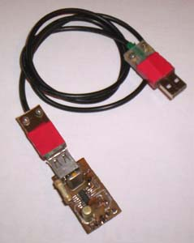
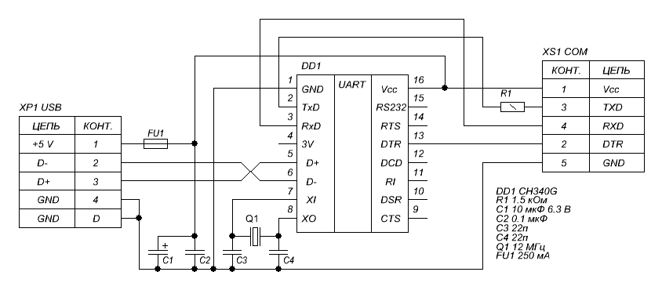
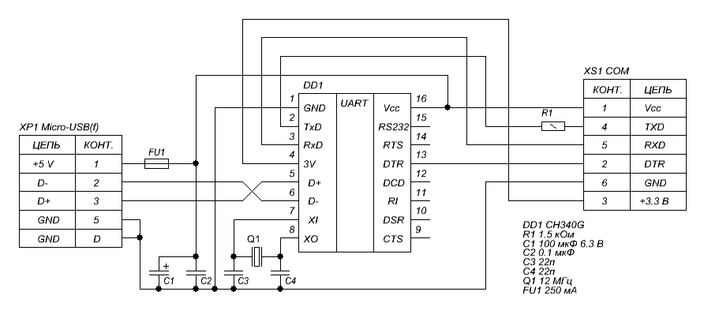
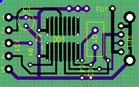
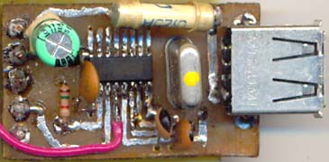
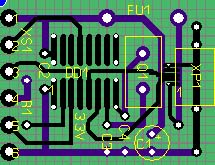
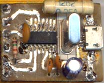
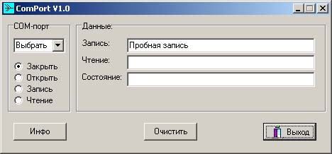

Преобразователь интерфейса USB - RS-232 (COM-порт)

Введение
COM-порт (последовательный порт, RS-232) предназначен для побитного обмена информацией между компьютером и периферийными устройствами по протоколу UART (Universal asynchronous receiver/transmitter, универсальный асинхронный приемопередатчик - УАПП). Его немаловажным преимуществом является относительная простота программного обеспечения. Вместо стандартных разнополярных уровней напряжения интерфейса RS-232 (примерно +12 В) могут использоваться уровни TTL (0 ... +5 В) или LVTTL (0 ... +3.3 В), обеспечивающие прямое подключение к широкому классу внешних устройств.
Схема электрическая принципиальная
Преобразователь интерфейса USB - RS-232 собран на микросхеме CH340G, создающей виртуальный последовательный порт с эмуляцией функций COM-порта, с использованием минимального количества внешних элементов (кварцевый резонатор Q1 12 МГц с конденсаторной цепью C3C4, токоограничивающий резистор R1, защитный предохранитель FU1 и конденсаторный фильтр C1C2). Микросхема имеет собственную цепь сброса при включении питания. Питание преобразователя осуществляется от источника +5 В разъема USB, для защиты которого используется предохранитель FU1 (желательно быстродействующий самовосстанавливающийся). Набор выходных сигналов минимизирован: RXD, TXD (прием-передача информации) и DTR (функция сброса). Уровни выходных сигналов соответствуют уровням TTL (0 ... +5 В).


Конструкция
Преобразователь интерфейса собран на печатной плате размером 25 х 40 мм2 или 22.5 х 30 мм2 (размер зависит от типа разъема - USB-AF или USB-micro-BF) из двухстороннего фольгированного стеклотекстолита. Сигналы USB подаются на гнездо XP1. Контакты COM-порта для удобства подключения выведены на одну сторону печатной платы. Крепеж печатной платы осуществляется пайкой на кросс-плату.
 


Программное обеспечение
Для обеспечения совместной работы COM-порта с компьютером необходимо установить программу-драйвер для микросхемы CH340 (в некоторых случаях этого не требуется). Для проверки корректной работы устройства разработана программа-тест COM-порта ComPort V1.0: ComPort_V10.rar (~177 Кбайт). Скопированный файл может быть проверен на отсутствие вирусного кода в режиме on-line [2].
Внешний вид окна программы показан ниже. С помощью программы можно выбрать подключенный COM-порт, открыть его и произвести запись в порт или чтение из него при наличии внешнего устройства, подключенного к порту и передающего и принимающего данные. Если внешние устройства отсутствуют, то записанные в порт данные могут быть прочитаны из него, если предварительно замкнуть между собой выводы RXD и TXD порта.

Ссылки:
08.12.2017
Альтернативные источники
энергии
Компьютеры и
Интернет
Магнитные поля
Механотронные системы
Перспективные
разработки
Электроника и технология